Tag der Toten (German: Day of the Dead) is the eighth and final Zombies map for Call of Duty: Black Ops 4, the twenty-fifth and final Aether Story map, and the thirty-second map overall. It released on September 23rd, 2019 for PlayStation 4, and was released September 30th, 2019 on Xbox One and PC.
Tag der Toten serves as the finale to the Aether storyline that first began with Nacht der Untoten in Call of Duty: World at War. A new story, the Dark Aether Saga, set in a new universe following on from the events of Salvation Lies Above was introduced in Call of Duty: Black Ops Cold War.
Overview
Tag der Toten is a reimagining of the map Call of the Dead from Call of Duty: Black Ops. Instead of the Call of the Dead Cast, players play as Victis for the first time since Buried in Call of Duty: Black Ops II. The Call of the Dead Cast are however referenced in small ways throughout the map, and players can find and interact with George A Romero's glasses for a small point reward.
Victis are sent by Ultimis and Primis to the area in search of the Agarthan Device, the final item needed for Nikolai to complete his grand scheme and prevent a second Great War with Doctor Monty.
Much of the core layout of Call of the Dead is still present in this map, although some locations have been expanded and there are now several new areas and paths for the player to explore. A particularly major addition is a large Group 935 facility resting on the side of the mountain overlooking the entire map, where Richtofen and other members Group 935 conducted many experiments with Element 115. The map uniquely features three power switches, each powering a different segment of the map.
As with other maps in Black Ops 4, Tag der Toten features a variety of unique gameplay and map design elements. Tag der Toten sees the return of freezing bodies of water, Ziplines, and the Flinger as they appeared in Call of the Dead, as well as additional ones not previously seen. One of the new Flingers in particular can bring the player to a small island containing the Golden Pack-a-Punch Machine, allowing players to instantly fully upgrade their weapons for a steep discount. At the starts of the game, the other Flinger and the Ziplines are in a state of disrepair and disuse, but can be repaired by the player and a new character, The Hermit. Certain underwater tunnels can also be swam through by the player.
The Hermit himself is a part of the maps core gameplay loop, as multiple map mechanics and quest steps involve traveling to the top of the lighthouse and interacting with him. He will repair broken items for the player, reward them with resources and key items, and guides the player through the main quest. He is never seen, but will speak with the players frequently regardless.
The map includes a huge assortment of wonder weapons to aid the player in their quest for survival. Multiple new Wonder Weapons are introduced, including the Tundra Gun, Wunderwaffe DG-Scharfschütze, Samantha's Music Box, and the Golden Snowballs. In addition The Thundergun and Matryoshka Doll both make a reappearance on the map, as well as the Ray Gun, Ray Gun Mark II, and Monkey Bomb as in all aether maps. All the map exclusive weapons can be obtained from a quest, and nearly all can be obtained from the Mystery Box.
Buildables are also present on the map, with the standard Ballistic Shield returning. New buildables include the Heat Pack, allowing players to move faster and freeze slower in water, and the Dynamite Bomb, allowing players to blow up specific barricades and access more of the map. Additionally an Ice Pick, allowing the player to more quickly break out of ice if frozen, can be won from a challenge. Snowballs are also present on the map and can be used to freeze and shatter zombies.
The Pack-a-Punch Machine returns with similar mechanics to those featured in Call of the Dead, moving around to wherever the lighthouses beam points. As mentioned before, a Golden Pack-a-Punch is also introduced.
The map also features a return of Trials, this time as Challenge Totems, rewarding players greatly that complete them. Challenge Totems are spread around key areas of the map, and are static. Their parameters and rewards are the same from game to game.
Complete 6 Challenges from 2 of the dummys (recommended: outside lighthouse and Forecastle)
Head to the hermit and he should deliver 4 dials which you need to grab from the pulley
Head to the side room in the Artifact Storage area and place them on the boxes with glowing red lights on the walls. Spin them until you hear a ding, then repeat for all 4 dials. (apothicon blood should start talking)If you would prefer to legitemately find all the number around the map, you can find the locations Here
(Subtitles recommended) After the Apothicon Blood says "Find Us Offerings Three", pay attention to the lines after that. Then use the chart below to locate that clues location and pick it up. Repeat for 3 items.
"Where one mysteries": Lighthouse Level 1 - Staircase step near mystery box
"Where preservation freezes": Main Deck - Life preserver on right side of ship
"Where crows roost": Forecastle - Barrels To right of ship crows nest
"Where bounded slept": Forecastle - Inside the blue shipping container
"Where bread breaks": Gangway - Island countertop on the left edge
"Where earth crumbles": Geological Processing - left side end of the Conveyor belt
"Where falls freeze": Cargo Hold - floating to the left of the jerrycan
"Where feet slip": Ice Grotto - on left side of ice slide, must catch while going down
"Where filth cleanses": Decontamination - In knocked over cart
"Where fire sinks": Sunken Path - against the rocks to the right of lantern
"Where helixes peak": Lighthouse Level 4 - sitting ontop of the jars
"Where lightning aims": Security Lobby - on bench under Wunderwaffe blueprints
"Where lines berth": Docks - left side of snow pile under zipline leading to Lighthouse
"Where lungs close": Lagoon - Underwater cave on the ground ot the left when exiting
"Where madness sleeps": Specimen Storage - On the mattress in the prison cell
"Where mountains throw": Outer Walkway (requires Dynamite) - On the edge of the upper floor when standing on the flinger
"Where north is found": Bridge - ontop of the compass across from the power switch
"Where power ends": Human Infusion - On the terminal to the right of the power switch
"Where hidden burns": Hidden Path - At the end of the burning water ontop of a generator
"Where thirst dawns": Stern - To the left of the soda perk on the railing next to the crane
Listen to the voice agian for another hint on where to "Seek the Seal of Duality". After meleeing the specific thing, you will find the safe, which requires a dynamite to be placed on it to be opened. Grab the seal.
"Where humans suffer" - Specimen Storage - Bulletin Board on left wall
"Inside an icy hall" - Ice Grotto - Sign on the right at the end of the ice slide
"Where Aether was gathered" - Geological Processing - Bulletin Board to the right of the big drum
"Where cages hang" - Boathouse - Bulletin Board in the small room with the lamp
Once you have collected the seal, head to the Artifact Storage again and place it on the barrel in the center of the room
Shoot the orb that is now moving around the room 3 times. This will send other orbs flying around the map. (wunderwaffe or Explosive weapons will work best)
You now need to go around the map and find the 3 glowing orbs. They can be located anywhere and will remain there UNLESS you get too close to them.When you find one, shoot a snowball at it to turn it blue, then shoot it with a gun. repeat for all orbs. (Zombie spawns are infinite during this step and will not yield any points)
Return to the Artifact Storage, freeze and shoot the orbs within the room one last time. Pickup the seal.
Head to the campfire in the Sunken Path and interact with it to place the seal ontop. Throw a samantha box on it to turn the flames blue. After a lore dump, grab the seal again.
Go to the Hermit and he will give you 2 soapstones. place them dow non the scorch marks behidn the lighthouse and activate the lighthouse trap. When finished, collect the stones and head to the facility (DO NOT TOUCH WATER orelse the stones will cool down and you'll have to re-heat them again)
Interact with the machine in the Human Infusion room to place down one of your stones. Place the other soapstone down on the scorchmarks under the Decontamination Room Water trap and activate it to cool it off. Once done, pick it up again and place it in the other side of the machine.
Between the 2 stones is a fuse you then need to grab. Head to the Lighthouse Station and place it in the power box beside the metal door on the first floor.
Head back to the Facility and shoot a red battery on electrical towers using the Wunderwaffe (they will dissapear when shot)
On the tower to the left when arriving via the zipline
On the opposite side at the Loading Platform area
Now you need to power 3 generators around the map by killing electric zombies next to them. (will spark with blue when successful)
Outside the Lighthouse Platform visible from the Lighthouse Station
Behind the MX9 wallbuy in the Lighthouse Approach area
Next to the PaP location beside the Boathouse
Go back to the Lighthouse Station door and interact with the fuse to open the door. Collect the Elemental Shard and return it to the Artifact Storage area by placing the seal and repeating the red orb StepShoot orb in the room 3 times. Find Orb around map. Hit with snowball the nshoot with normal gun. repeat 3 times. Repeat with orbs inside the room.
grab the seal and place it back down on the fire and use another samantha box on it. After the lore drop, you can grab the seal once more.
GET FULLY SETUP ATY THIS POINT BEFORE CONTINUING. bring the seal to the Hermit (requires all players) and it will start a lockdown within the Lighthouse. (2 minute survival) Once complete you can grab the seal from the hermit.
Visit each PaP location and PaP the seal by placing it in the machine and getting zombie kills nearby until the seal pops out again. Lighthouse will direct you to the next location.
Once all 4 PaP locations have been done (no golden PaP) then return it to the Artifact Storage. Shoot the glowing orb 3 times, find the 3 orbs WITHIN the room and use snowballs and bullets once more. Pickup the seal.
Bring the seal to the campfire and throw a samantha music box at it for the final lore dump. Grab the seal again.
BOSS FIGHT! get fully prepared with PaP, Shield, everything you'll need. Fling over to the golden PaP when ready. Insert the seal into the golden PaP machine and charge it one last time. It should float into the air and change the entire map. YOU MUST REMAIN IN THE BUBBLE FROM THIS POINT ONWARDS. When the orb leaves you, wait until it's halfway before flinging or using a zipline to catch up.The orb will stop at 3 locations and be required to be filled with zombie souls before it continues. It will give you max ammo and carpenter after the soul box is filled. (Main Deck, Lighthouse Cove, Lighthouse Station)At the Main Deck, take the stairs to catch up after it starts moving again. Powerups spawn behind you.All water has now turned to lava and you'll need to jump onto the floating platforms in order to not take damage.Once at Human Infusion, you'll enter the final event. During this one, the orb will slowly get smaller and smaller. Keep getting kills to charge the seal. Screen will glow white once complete.
Grab the Agarthan device once the characters stop talking and give it back to the hermit. Head to the top level of the Sun Deck and watch the Lighthouse.
Once you see the golden thing fall onto the map. Head to Forecastle and collect it to finish the Aether Story.
Requires the Zipline Handle and turn on all Power SwitchesAllows you to Fully Upgrade (Max Damage + AAT) For only 5000p
When the Lighthouse is shining it's light at the Golden PaP Machine (off the side of the boat), you can ride the Flinger to be thrown to the golden PaP
collect a statue at each of the PaP spawn locations (can only pick up when the machine is at that particular location)
Golden PaP - To the right of the machine
Lighthouse Annex - Right of the machine
Beach - Behind the machine
Artifact Storage/Sunken Path - behind the machine (must extinguish fire by going through Artifact Storage and shooting pipe above the machine)
Lagoon - Behind the machine
Head to the altar in the corner of the beach (on the right if you fall from Hidden Path) and interact to place them (Will start an all electric round which you need to survive)
Then return to the altar to collect the free perk.
Will catch all nearby zombies, launching them into the air before killing them.Requires Zipline Handle
You need to find a keycard located in the Facility right side room (Decontamination)
To the left hidden inside the dryer
In the center in an eye flushing unit
Behind the eye flushers in the second sink
Find a second keycard located in the Specimen Storage area
on the left as soon as you enter in the post box
Inside the toilet at the back of the room
At the bottom shelf of the canister rack on the right when entering
Turn on facility power in Human Infusion and head up to the Security Lobby and interact with the slots in the leftmost panel in the center to place the keycards. collect them when they pop out again
Head back to Human Infusion and input the keycards into both sides of the large vault door. Interact with the vault to start a lockdown. Once finished, the vault will open and you can grab the music box from within.
Can either be gotten through the mystery box or the EE. Basically a sniper version of the WunderwaffeRequires Zipline Handle
Shoot down the icicle with a key inside and collect it and melt it down using the fire at the far end of the boat. collect the key from the pot when it's done.
Above blue cave entrance from the beach
up on the lighthouse juse below the catwalk when looking from the Lighthouse Station deck area (below left side of broken railing)
On the edge of the stairs above you when looking from Lighthouse Cove going into Lighthouse Station
Head to the Specimen Storage area of the Facility and interact with the safe on the counter to open it. Charge it by killing 11 zombies nearby. (device should glow green when complete)
Pick up the Vrill device and give it to the hermit. He should return a key on the pulley which you can use to open the box on the floor behind you. The Wunderwaffe is inside.
Can either be gotten through the mystery box or by completing all 5 hermit challenges the returning to the hermit to claim the key to open the box to the left of the pulley.
You need to find 4 sock puppets and hit them using a snowball
Sunken Path
at the tip of a sharp rock just outside the path
Past the GKS wallbuy on the tip of the boat
On another sharp rock to the right of the boat at the tip of a large pointy rock
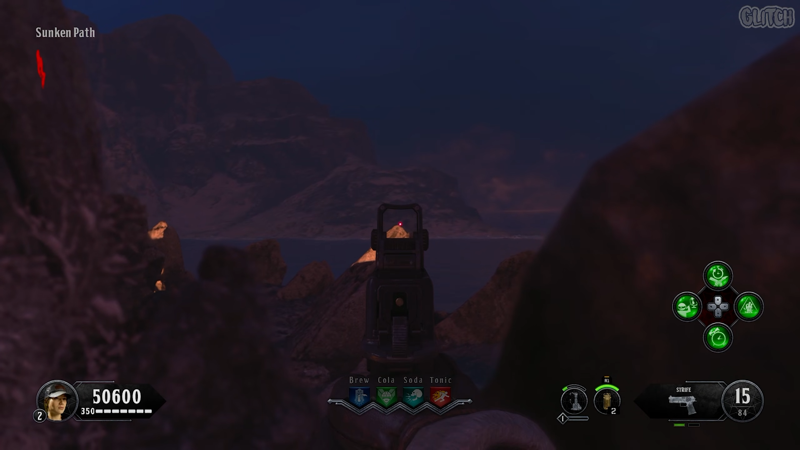
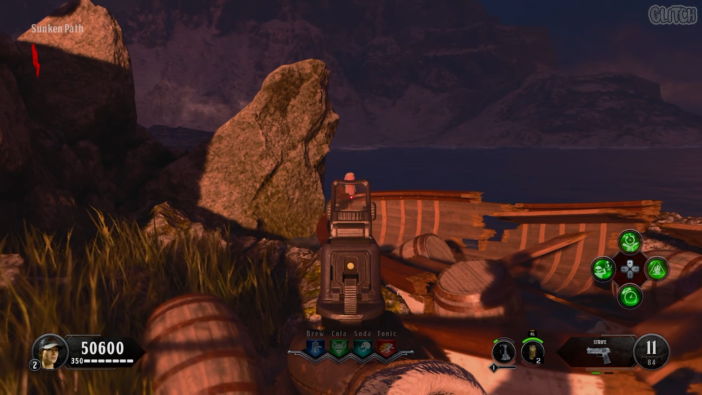
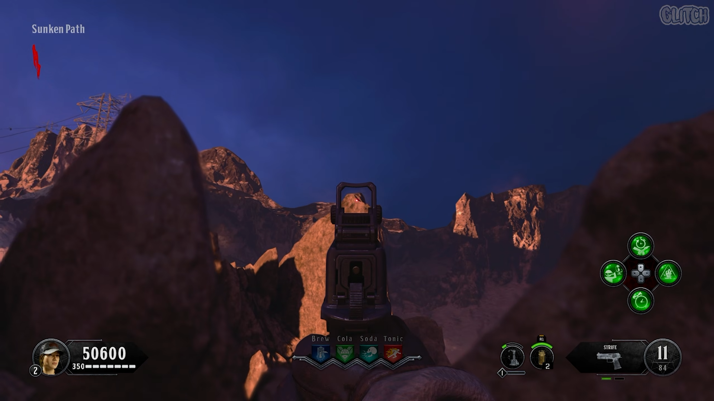
Lighthouse
Outside the zombie spawn on Level 2 on the middle post
Outside zombie spawn on level 2 ontop of the power line coil
On Level 4 behind you as you come up the stairs, to the left of the friends mural
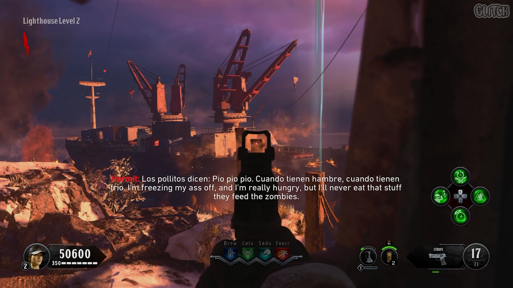
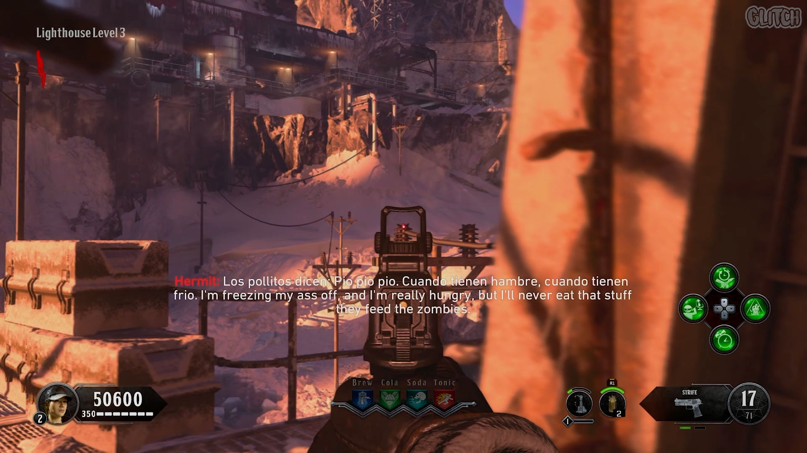
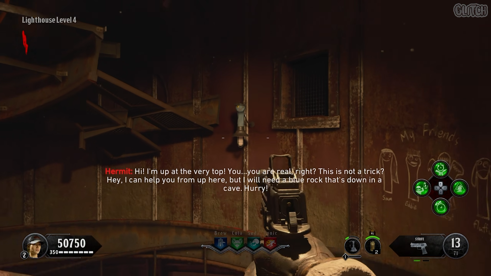
Geological Processing
On the top right of the white box in the air when you enter
Ontop of the shelf on your left as you enter
at the back of the room on a power box inside the right zombie spawn
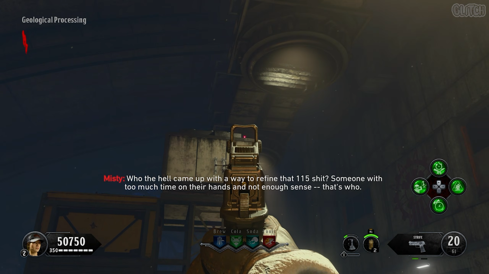
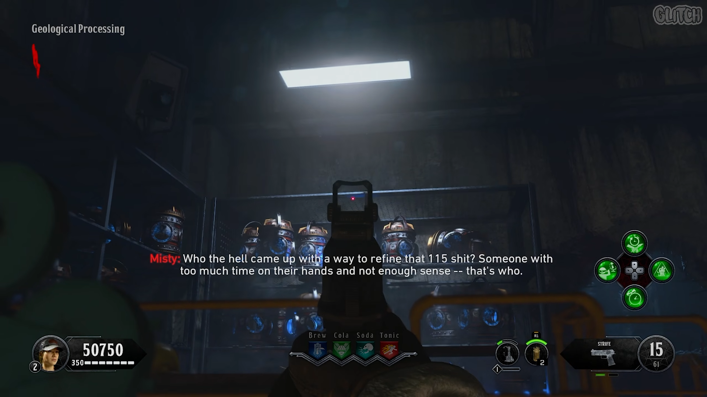
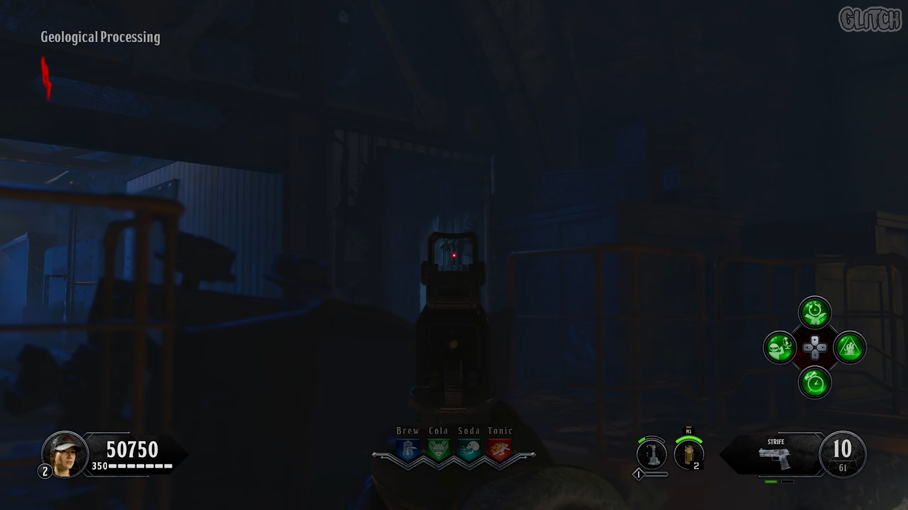
Sun Deck
Ontop of the smokestack towards the bowie knife wallbuy
On the ledge above the speaker on the roof
In the middle top of the crane holding the zipline
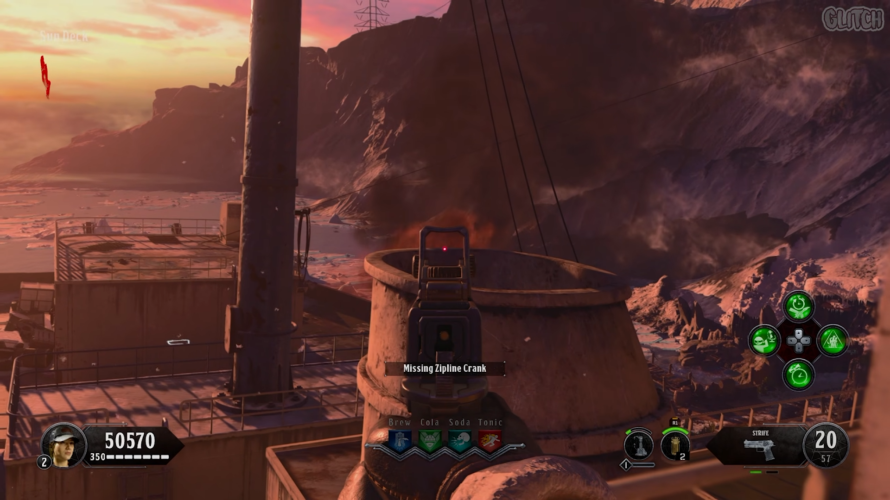
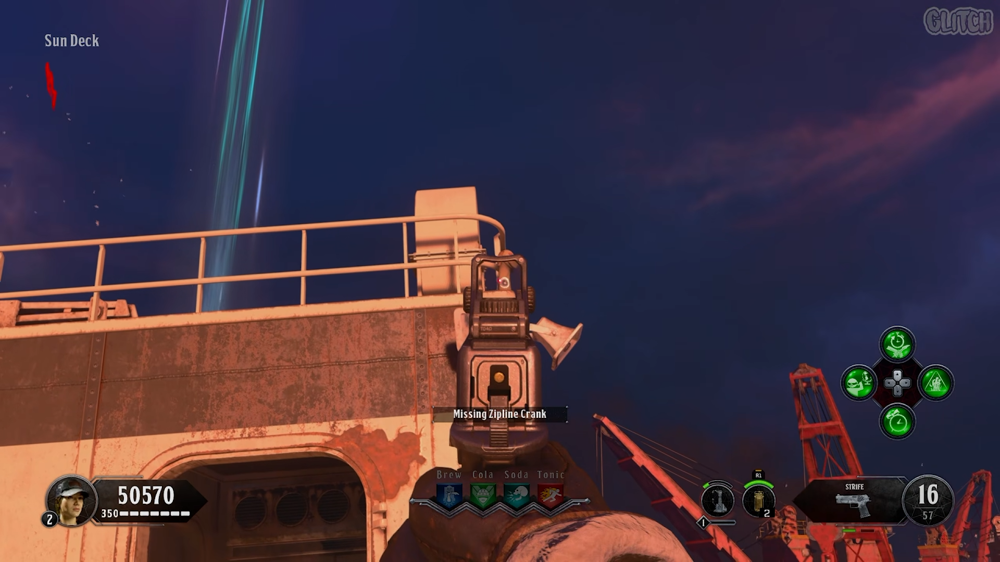
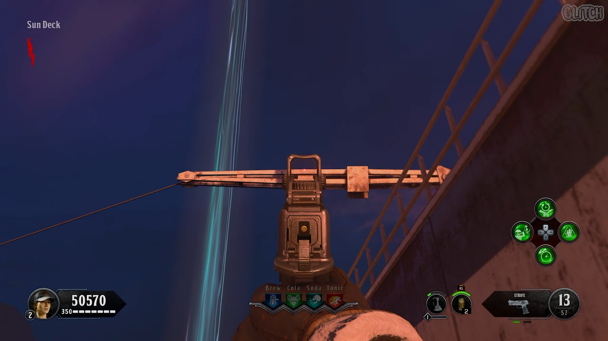
Once all 4 puppets have been collected, you'll need to charge 3 blue campfires with zombie soul (will be one at a time and a different order each round, fire goes out when complete)
Beach
Behind the Boathouse near the PaP location
Frozen Crevasse ontop where the mystery box is (zombies need to be on the roof to count)
Head to the Human Infusion area and shoot giant tank hanging from the rofo to break it. Somewhere on the floor should be a spleen that you need to pick up.
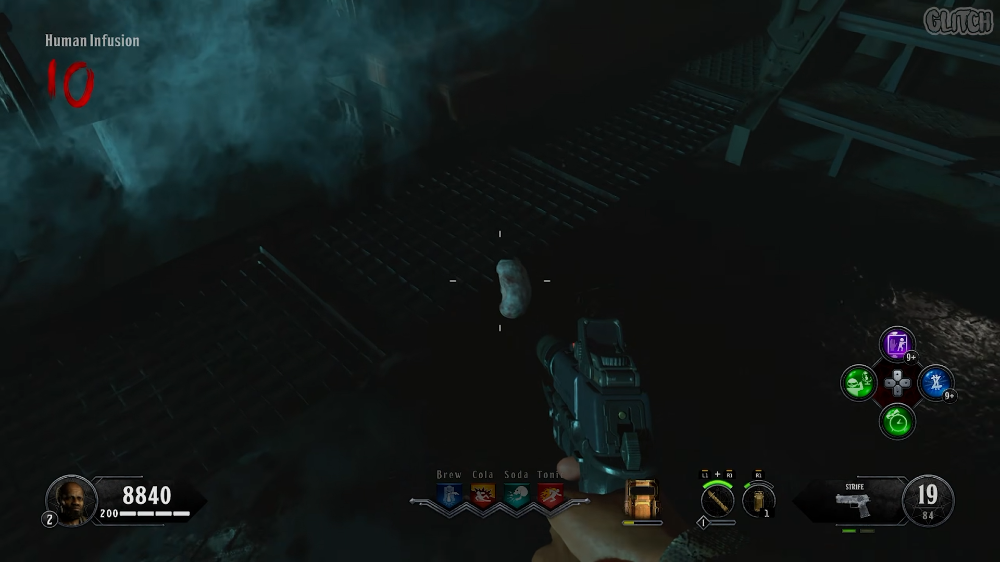
You'll need to quickly head down the zipline to Docks and step into the freezing water to cool it off. (you'll hear a ticking noise that indicates its frozen-ness.)
Once the timer is slowly ticking, you need to use the zipline up to the Lighthouse and give it to the hermit. he will return with yellow snowballs. (all snowballs around the map will also be replaced)
Kill 3 Napalm Zombies using snowballs for them to drop the parts. Construct at any Buildable TableNOTE: While carrying all 3 parts OR a completed dynamite, Napalm zombies will not spawnThe Dynamite can be used to blow up 3 doorways
Looking at it from the far side, spin quickly while standing on the right side corner of the flinger. You should be flung way outside the map. (easier on controller)
You then need to swim through the tunnel to the other end. take out your specialist if you start taking damage. Dying wish is also helpful.
You can interact with the boat infront of you to return to the map again.
around the map you can find 5 red and black vinyls which will tell the story of PaP. They can be played via the gramaphone in Specimen Storage (facility)
Lighthouse Station leaning against the cabinet behind the stairs
Hidden in the snow when going from the Beach to the blue cave on the right side
In the Boathouse on the chair facing the light in the small inside room
Between a large drum and the wall in Geological processing in the right
In Human Infusion on the left under the table ot the right of the sink.
While playing through the EE, you can interact with the Sunken Path campfire to get extra dialogue. After getting the first quote, you can interact 2 more times each time you have to go to it.In total there are 9 quotes and a song if you interact a third time the after the final quote.
Hermit Challenge Totems
You must activate 2 power switches (not facility) in order to start the totems. You must return to the totem to claim the reward before the next challenge can begin.
Some Ziplines require a hand to ride, to get this you must first find 2 cranks. Then place and rotate them both to completion (Main Deck near hole & Sun Deck)returning to the hermit, he will deliver you the zipline handle, allowing you to use ziplines both directions
Forecastle
When entering from left side, on your right beside the zombie spawn
When entering from the right, on your right besdie the ladder
At the bac knear the fire, leaning against a large generator
Stern
To the left of a yellow barrel on the right side
inside the room to the left of the zombie spawn
behind the room leaning on the wall near pile of snow
Flingers will Fling you to different parts of the map. One of which has 3 possible locations depending on where you are standing on the pad (left, right, or center)There are 2 normal flingers and one special one, the normal ones require you to grab their broken gear box, return it to the hermit, and return the fixed to the flinger